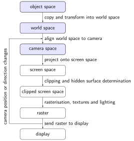
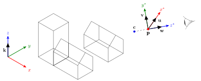
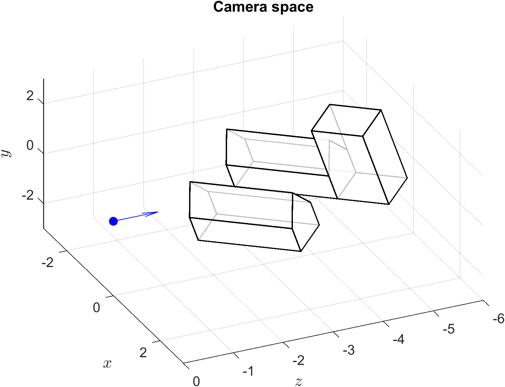

Camera space
Contents
Camera space#

The next step in the viewing pipeline is to align the world space to the camera space. Imagine you are viewing a virtual environment through a camera positioned in the world space at \(\mathbf{p}\) and pointed towards the point with position \(\mathbf{c}\) known as the centre of view (Fig. 59). We want to transform the world space so that \(\mathbf{p}\) is at the origin of a new space with axes \(x^\ast\), \(y^\ast\) and \(z^\ast\) where, from our point of view, \(x^\ast\) points to the right, \(y^{\ast}\) points up and \(z^\ast\) points towards us. The reason we want this new axes configuration is so that the \(x\) and \(y\) co-ordinates match the horizontal and vertical axes of the display.
{kind=link}

Fig. 59 The world space is transformed so that the viewer \(\mathbf{p}\) is the origin of a new co-ordinate axes \(x^\ast\), \(y^\ast\) and \(z^\ast\).#
The first transformation is to translate the world space by \(-\mathbf{p}\) so that the viewer is positioned at the origin. The matrix that performs this translation is
Next we need to transform from the \((x,y,z)\) axes to the \((x^\ast, y^\ast, z^\ast)\) axes. Let \(C = \{\mathbf{u}, \mathbf{v}, \mathbf{w}\}\) be a basis for the new axes where \(\mathbf{u}=(u_1,u_2,u_3)\), \(\mathbf{v} = (v_1, v_2, v_3)\) and \(\mathbf{w} = (w_1, w_2, w_3)\) are unit vectors pointing in the \(x^\ast\), \(y^\ast\) and \(z^\ast\) directions respectively. The \(\mathbf{w}\) vector is calculated using
The \(\mathbf{u}\) vector is perpendicular to the plane that \(\mathbf{w}\) and \(\mathbf{k}\) lie on so
The \(\mathbf{v}\) vector is perpendicular to the plane that \(\mathbf{u}\) and \(\mathbf{w}\) lie on so
Note that the order of the vectors in the cross products when calculating \(\mathbf{u}\) and \(\mathbf{v}\) are important as the cross product is not commutative. The change of basis matrix for going from the standard basis \(E = \{\mathbf{i}, \mathbf{j}, \mathbf{k}\}\) to the new basis \(C = \{\mathbf{u}, \mathbf{v}, \mathbf{w}\}\) is
Combining the translation and change of basis matrix gives
\(A\) is the alignment transformation matrix that aligns the world space to the camera space. This is applied to the world space vertex matrix to give the camera space vertex matrix
Note that every time the view position changes or the centre of view changes the alignment transformation matrix will need to be recalculated and applied to calculate the camera space vertices. In a computer game this typically happens 30 or 60 times a second as the player is moving the camera. The player traversing a virtual environment feels like they are moving through the world space, what actually happens is the player remains are the origin looking down the \(z^\ast\) axis and it is the world space that moves around them.
Example 31
The world space from Example 30 is viewed from position \(\mathbf{p} = (5, 5, 1.75)\) looking towards the centre of view at \(\mathbf{c} = (4, 4, 1.5)\). Calculate the camera space co-ordinates of the virtual environment.
Solution
Calculate the basis \(\{ \mathbf{u}, \mathbf{v}, \mathbf{w}\}\) for the camera space
So the change of basis matrix is
We can check whether the change of basis matrix is correct by multiplying it by the homogeneous co-ordinates for \(\mathbf{p} - \mathbf{c}\) and check that the \(x\) and \(y\) co-ordinates are zero and the \(z\) co-ordinate is positive.
so the change of basis matrix is correct. The fourth column of the alignment matrix requires the calculation of the following dot products
therefore the alignment matrix is
Applying the alignment transformation to the world space co-ordinates to calculate the camera space co-ordinates
MATLAB code#
The MATLAB code below calculates the camera space co-ordinates for the virtual world from Example 30 and the viewing parameters from Example 31 where it is assumed that the world space homogeneous co-ordinates are contained in Vworld. Here the camera space co-ordinates are plotted with the \(y\) and \(z\) co-ordinates swapped around so that we can show the camera space from the point of view of the viewer looking down the \(z\)-axis. The horizontal \(z\)-axis scale has also been reversed so that the axis points towards the viewer.
% Define camera position and centre of view
p = [5, 5, 1.75];
c = [4, 4, 1.5];
k = [0, 0, 1];
% Calculate basis vectors
w = (p - c) / norm(p - c);
u = cross(k, w) / norm(cross(k, w));
v = cross(w, u);
% Calculate change of basis matrix
A = [ u, -dot(p, u) ;
v, -dot(p, v) ;
w, -dot(p, w) ;
0, 0, 0, 1 ];
% Align world space to the camera
Vcamera = A * V;
% Plot camera space (from viewing position)
figure
h1 = axes;
patch('Vertices', Vcamera([1,3,2],:)', 'Faces', F, FaceColor='w', FaceAlpha=0.75, LineWidth=1)
set(h1, 'Ydir', 'reverse')
xlabel('$x$', 'Interpreter', 'latex', 'FontSize', 18)
ylabel('$z$', 'Interpreter', 'latex', 'FontSize', 18)
zlabel('$y$', 'Interpreter', 'latex', 'FontSize', 18)
view(0,0)
axis([-3, 3, -6, 0, -3, 3])
box on
The result of applying the alignment matrix to the world space co-ordinates to produce the camera space co-ordinates can be seen in Fig. 60 and the plot of the camera space when viewed looking down the \(z\)-axis is shown in Fig. 61.
{kind=link}

Fig. 60 The camera space from Example 31 viewed from an arbitrary point.#

Fig. 61 The camera space from Example 31 viewed looking down the \(z\)-axis.#